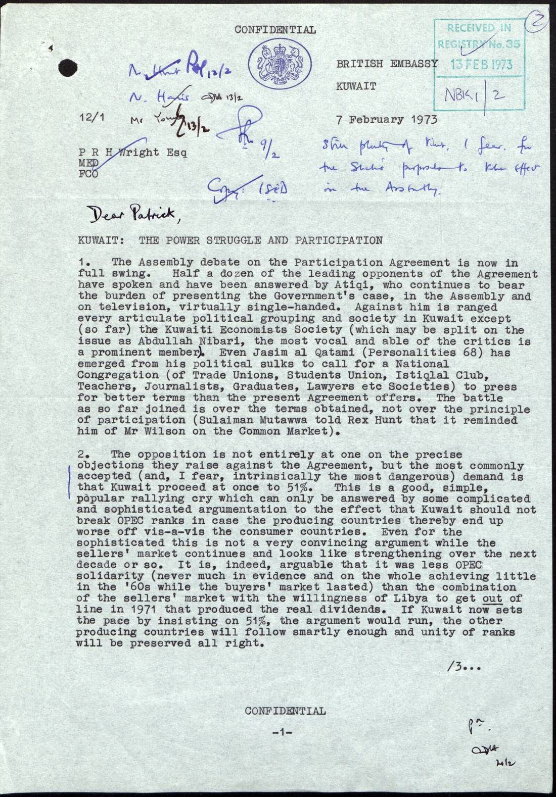

1973 · British Embassy letter: "Kuwait: the power struggle and participation"
Jassim Al-Qatami and the oil Participation Agreement
What it is
During the Assembly debate on the oil Participation Agreement, the Embassy notes that Jasim al Qatami came out to call for a National Congregation of unions, students, societies and professions to press for better terms.
Why it matters
Jassim's part in the national debate over Kuwait's control of its oil.
Who is meant
The same Jassim Al-Qatami as the records that give his full name: Director of Police, resigned at Suez, later a nationalist member of the National Assembly.
Page copies

Original text
English translation
Sources
The National Archives, London, digitised by the Arabian Gulf Digital Archive (agda.ae). Images reproduced by permission of The National Archives, London, England.
Archive reference
- FCO 8/1988 · Political situation in Kuwait
How this text was made: Typed from the archive's own text reading of the scan, corrected against the scan where the reading was garbled. … marks text left out. Arabic translation by Claude; please review.
Open in the interactive site